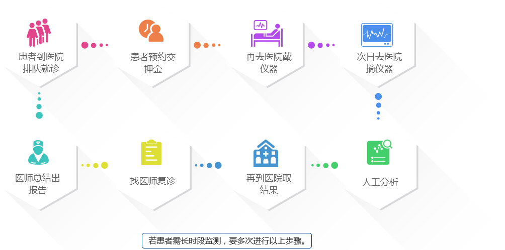
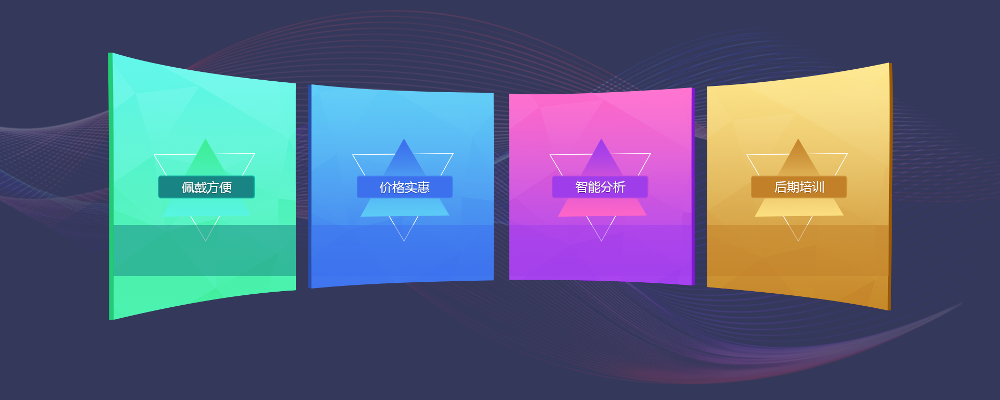
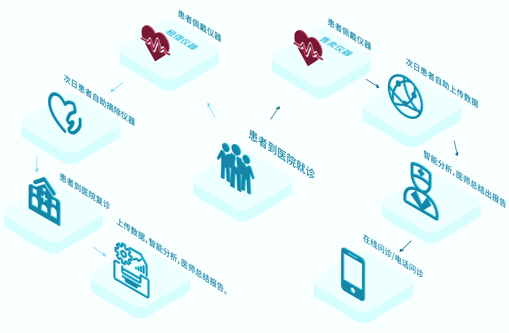
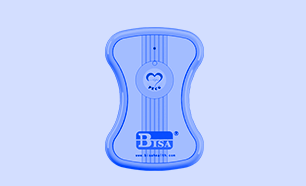

傳統方式

四大優勢

碧沙心電儀使用簡單，無需導聯線，方便佩戴。除劇烈運動外，患者正常的日常活動不會影響心電監測。患者可自助使用或摘除心電儀，醫師可以根據患者制定長時段監測方案。
傳統的12導聯Holter價格昂貴，單個Holter的價格約10~20萬，在存放和租借給患者使用過程中產生的設備損耗非常大。而碧沙心電儀價格實惠，大大減少醫院器材成本。
利用碧沙智慧心電監測分析系統在雲端進行心電大數據處理並進行自動分析，無需人工分析，減少醫師大工作量勞動。即提高醫師工作效率，又提升診斷的準確性。
碧沙康健為醫療機構提供1年免費培訓服務，可進行3次上門技術個性培訓。培訓內容包括產品使用與保養、系統軟件使用與維護、專業電腦使用等相關培訓。
方案流程

方案配置

碧沙智慧心電監測分析系統
碧沙智慧心電監測分析系統包括采集原始心電數據，存儲大量心電數據，在雲端進行心電大數據處理並進行自動分析，最後結合專業醫師的總結建議形成最終的心電圖報告。此系統大大提高心電圖分析的準確率和實時性。

五臺碧沙心電儀
碧沙心電儀是3導聯動態心電儀，使用簡便，一學就會。具有超長工作時間（一次充電可連續采集120小時ECG數據）和超大容量（可存儲878小時ECG數據）。產品已獲得醫療器械許可證、CFDA 註冊證、FCC認證、FCC藍牙QBQ認證。

一年免費數據轉換服務
碧沙康健提供將碧沙心電儀數據格式轉換成符合歐洲標準的EDF格式或符合美國標準的MIF格式的服務。碧沙心電儀監測的心電圖數據具有通用性。

一臺專業電腦
碧沙康健提供適用於心電監測分析系統的專業電腦。專業電腦的使用環境不同於一般商用電腦，因此對於專業電腦配置的要求更為嚴格。

一年免費培訓
碧沙康健為醫療機構提供3次免費線下培訓、1年免費線上培訓，包括產品使用與保養、系統軟件使用與維護、專業電腦使用等相關培訓。
合作夥伴